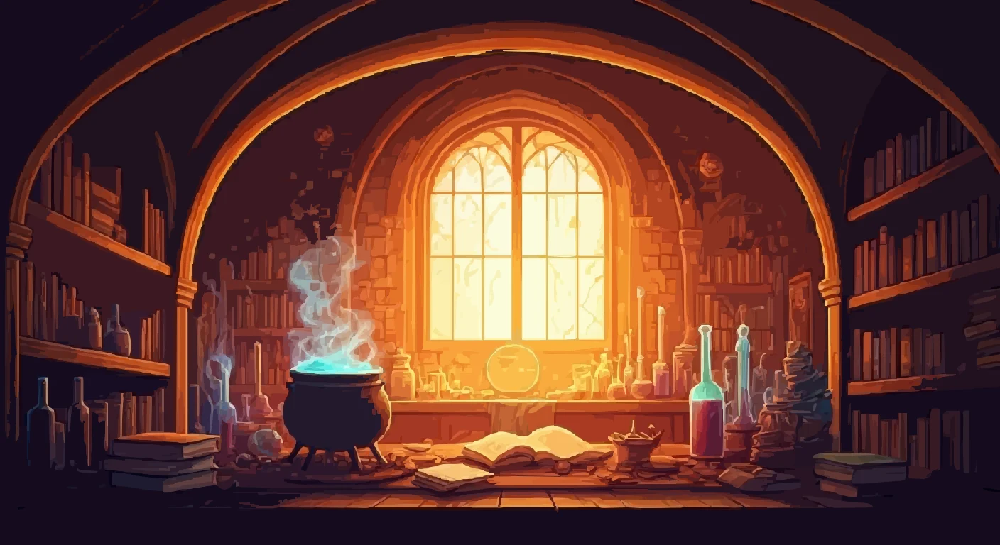

⚗
Inloggen voor leerlingen en leerkracht
Je kunt niet zelf een account registreren. Vraag je leerkracht om een account of een nieuw wachtwoord.

ONLINE CHEMIE-ARENA
Log in met de gebruikersnaam en het wachtwoord die je van je leerkracht kreeg. De online arena staat los van de codes van de gewone escape room.
Je kunt niet zelf een account registreren. Vraag je leerkracht om een account of een nieuw wachtwoord.
Gebruik dit slechts één keer. De sitebeheerder moet vooraf TEACHER_SETUP_SECRET in de Netlify-omgevingsvariabelen instellen. Na het aanmaken logt de leerkracht hier in met de gebruikersnaam en het wachtwoord.